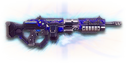

← Back to the NC6A GODSAW comparison
Sage Guide · New Conglomerate · Heavy Assault
The auraxium reward for mastering NC light machine guns — the prize at the end of the Master LMG directive, and the hardest-hitting LMG in the game. Two hundred damage a bullet, a 65-round drum, and a second fire mode that chews armour.
The one-line verdict: a Gauss SAW that hits like a freight train and forgives nothing. Five bullets kill up close, your first aimed shot is perfectly true, and the recoil climbs straight up with no sideways wander. The price: a slow 500 RPM — every miss costs you 120 ms — and a 4.24-second reload that punishes careless timing. Fight between 10 and 50 metres, burst in fives, and it will carry you.

The NC6A GODSAW · Genudine Offensive Development Squad Automatic Weapon · 65-round drum magazine
Every enemy infantry has 1,000 health (500 shield + 500 health). Your bullet does 200 damage up close, fading to 143 at long range. Headshots count double, leg shots count less (×0.9). That gives you three numbers worth memorising — and they're the best in the LMG class:
| Range | Damage | Head | Chest | Legs | Chest vs shielded Heavy |
|---|---|---|---|---|---|
| Close · 0–10 m | 200 | 3 | 5 | 6 | 8 |
| Mid · 10–54 m | 200→167 | 3 | 6 | 7 | 9 |
| Far · 54–85 m+ | 167→143 | 4 | 7 | 8 | 11 |
Perfect-accuracy times to kill: 3 headshots ≈ 0.24 s, 5 chest shots ≈ 0.48 s up close. In real fights you'll land maybe half your rounds — still, this is why the head matters so much on this gun. Max damage per second: 1,667.
Full power to 10 m, then a steady slide to minimum at 85 m. The gold line shows High Velocity Ammunition, which holds damage further out (full power to 8 m, minimum at 105 m) at the cost of a shorter full-power window up close.
One gun, four fighting styles. The right technique changes with distance — use the range finder below to see what your bullets do at any range, then learn the four bands underneath it.
How to fight hereAim down sights at the upper chest and neck. Fire in bursts of 5 — your recoil climbs straight up into the head for free damage.
Aim: centre of the chest, from the hip. Keep moving.
Scoping in costs you time and halves your move speed — at arm's length that gets you killed. The GODSAW's hipfire is loose for an LMG (3.75° standing), but at this range the 0.52 m ring still covers his chest. Strafe side to side (A/D) while firing so you're hard to track, and let the overshield soak the return fire.
Aim: neck / upper chest. Bursts of 5 rounds.
This is where the gun earns its keep: full 200 damage, a perfect 0.00° first-shot cone, and recoil that climbs straight up. Start your crosshair at the neck — the natural upward climb walks your shots into the head, and 3 head hits end the fight in a quarter of a second. Strafe while scoped; you're slower, but a moving target still beats a still one.
Aim: chest. Bursts of 5 rounds, pause between them.
Damage is sliding toward 167 and your cone of fire blooms if you hold the trigger. Fire a burst, release for a split second to let accuracy reset, fire again. The recoil drifts straight up (0° angle, no sideways bias), so pull your mouse gently straight down. Crouch or stand still when you can — both tighten your shots.
Aim: chest. Taps of 3–5 rounds at exposed targets only.
At 143 damage you need 7 chest shots, 11 against a shielded Heavy — a long, loud advertisement of your position. Take these shots at stationary or fleeing targets, medics reviving, and engineers on turrets. Otherwise, your better play is to close the distance behind cover. Knowing when not to shoot is a skill too.
Your accuracy is decided by two things before skill even enters it: what your body is doing (your stance sets the starting cone of fire) and what your finger is doing (holding the trigger grows that cone with every shot). The GODSAW has two fire modes — full-auto and an armour-piercing mode (B key) — but the armour-piercing mode is for vehicles, not infantry: it deals a flat 125 damage to soldiers, so leave it off in a gunfight. "Firing modes" below are something you do with your finger, not a setting on the gun.
| Stance | Starting cone | What it means for you |
|---|---|---|
| Sprinting | 7.0° | Maxed out — the widest the cone can be. Never start firing from a sprint. |
| Hipfire, moving | 4.25° | Walking or strafing from the hip. Fine inside ~8 m, leaks rounds past the target beyond it. |
| Hipfire, standing | 3.75° | Your point-blank default. The 0.52 m ring at 8 m in section 04 is this stance drawn out. |
| Hipfire, crouched | 3.25° | The tightest hipfire you have (3.75° if you crouch-walk). Crouch when holding a doorway from the hip. |
| Aimed (ADS), feet planted | 0.00° | A perfect first-shot cone — standing or crouched makes no difference here. |
| Aimed (ADS), strafing | 0.40° | Still very tight, but you move at half speed (0.5×). Strafe between bursts to stay hard to hit; plant your feet during each burst. |
| Mode | How your finger does it | Use it at |
|---|---|---|
| The mag dump | Hold the trigger and don't let go | Point blank only, or suppressing a doorway. Bloom maxes out fast — past ~8 rounds you're spraying, not aiming. |
| Bursts — the default | Hold for 5 rounds, release ~0.15 s, hold again. 6–8 rounds is fine while you're learning | Almost everything, 8–50 m. Each release resets the cone, so every burst starts at 0.00°. |
| Tap-fire | Short taps of 3–5, or single clicks, with a real pause between | 50 m and out, at exposed or stationary targets. Slow, but every round goes where the dot is. |
A target 30 m away, aiming down sights. Press and hold FIRE (mouse, touch, or hold Space with the button focused) and watch the holes walk wider the longer you hold — that's firing from an ever-growing cone. Release, let the cone reset, fire again. Aim for bursts of 5; 6–8 is tolerable while you're new. This practice window is shared by the whole Sage series: it's driven by a weapon profile plugged into the window — here the GODSAW's (500 RPM, 0.00° starting cone, 0.07° bloom per shot, target at 30 m) — and the spread is drawn at true scale from those numbers.
Cone of fire — fills as you hold, empties when you release.
Your bursts will be graded here — green at 5 rounds, tolerable up to 8.
Some things are easier to show than to say. Here's what your bullets actually do: how wide hipfire spreads at 8 metres, what a good burst rhythm looks like, and what the 2x sight really changes. The hands-on version — holding the trigger yourself — is the practice window in section 03.
A full-size target 8 m away — an arm's-length room fight. The rings show where hipfire rounds land around your aim point (the chest). Sizes are drawn to scale from the gun's real cone-of-fire numbers.
Read it this way: standing still, the 0.52 m ring roughly covers the chest — most rounds hit a target this size, which is why hipfire works point-blank. But move and it grows to 0.59 m — wider than the torso — so the edge rounds start leaking past him, and the rings only grow with distance while the man doesn't. Crouch and it tightens to 0.45 m. Past ~10 m that's rounds missing entirely: the exact moment to switch to aiming down sights, where the spread shrinks to a dot. (Ring sizes use the real geometry: spread diameter = 2 × distance × tan(cone ÷ 2).)
Every shot widens your cone of fire ("bloom"). Releasing the trigger for a heartbeat resets it. Same 15 rounds, two very different outcomes:
The target pattern is bursts of about 5 rounds — that's the ideal. Bursts of 6–8 are fine while you're new (call it newbie tolerance). Past that, the bloom (0.07° per shot aimed, 0.14° from the hip) keeps growing with every shot, so the extra bullets mostly decorate the wall behind your enemy instead of hitting him. Short bursts also leave you rounds for the second enemy — remember, the magazine is 65, and at 500 RPM a long hold eats it in under 8 seconds.
No zoom. The target at 35 m is small but the view is wide open — you see the crate, the tower, and the next enemy coming. Fast to aim, nothing blocks your edges. Best inside ~40 m.
Same target, same 35 m — but he looks twice as tall, so placing shots on his chest and head gets much easier. The price: your view narrows to the round window, the crate and tower are gone, and close targets feel fast and huge. Best at 25–50 m.
That's the whole 30-cert decision from section 05 in one picture: 1x for awareness, 2x for precision. Most veterans carry both and swap per base — indoors 1x, open ground 2x.
The GODSAW does take attachments — every slot is open. That surprises players who remember the old days: before the 2022 Arsenal Update, auraxium weapons came fixed with no slots at all. Since the update, the rail, barrel, optic and ammo slots are yours to fill, and the devs' own note at the time said the availability of attachments would push "an already solid weapon just a bit further". The only things fixed on the gun are the magazine and the iron sights — the muzzle brake it ships with can be swapped for a Compensator or a Flash Suppressor. The live Census data for this weapon lists nine attachments across the barrel, rail and ammo slots, including the Compensator, Angled Forward Grip and Smart Feeder — all three appear below.
The default front and back sights. Usable, but a red dot is a real upgrade on this gun — budget 30 certs for one.
Good: your first hour, while you learn the recoil.
Bad: anything past it — the iron post covers a lot of target at range.
A clean red-dot sight with no zoom. Your default-in-practice, and honestly your best all-round option.
Good: everywhere indoors and out to ~40 m — which is most PlanetSide fights.
Bad: picking out targets past 50 m; that's what the 2x is for.
Doubles your view magnification. Costs almost nothing — the price of a few kills.
Good: open-field bases, tower fights, and your 25–50 m burst game. Swap between 1x and 2x per fight.
Bad: tight indoor rooms — the zoom makes close targets feel fast and huge.
Night-vision sight: enemies glow white against a dark view, and it sees through smoke.
Good: night fights, smoky doorways, spotting infiltrators by their outline.
Bad: daytime and long range — its view is short-ranged and washes out in bright light.
LX Tacti-Eye / LACO (3.4x) and TrueShot / LX Mark IV (4x) — sniper-style magnification on an automatic LMG.
Good: almost nothing a beginner does — recoil magnifies too, and tunnels your vision.
Bad: any fight inside 30 m, which is where you'll spend your first hundred hours.
A 6x mil-dot scope. On a 500 RPM LMG, this is a telescope bolted to a hammer.
Good: nothing in normal play.
Bad: everything closer than a horizon — you will lose every duel you take with it.
The brake the gun ships with. No downside, no cert cost — the GODSAW's recoil is already straight up and manageable.
Good: your first weeks, and honestly most of the time after that.
Bad: nothing — there's no downside to an empty slot.
Cuts vertical recoil by 30% by venting gas upward — the biggest single recoil cut on this gun. Costs a 15% wider hipfire cone, and you show on enemy minimaps from 35 m farther away.
Good: your 25–50 m burst game — the vertical kick drops by nearly a third, so longer bursts stay on target.
Bad: hipfire fights inside 8 m, where the wider cone hurts, and any time you want to stay off the minimap.
Hides your muzzle flash so your own view stays clear at night — but you appear on enemy minimaps from 15 m farther away.
Good: night fights where your own flash blinds you. A comfort pick, nothing more.
Bad: as an early purchase — it changes no fight outcome. Buy it last, if ever. And note: this is not a suppressor — there is no true suppressor for this gun, so don't go looking for stealth here.
Cuts side-to-side recoil by 25%, keeping your bursts on a single target. Tiny cost: weapon swap is 0.15 s slower. The wiki's intro still calls this grip "built-in" — that was the pre-Arsenal gun. Today it's an ordinary rail choice, and a good one.
Good: the default for aimed, mid-range play — the GODSAW's recoil is already straight up, and the grip keeps it there.
Bad: nothing meaningful. It only stops helping if you never aim down sights.
Tames the first shot of each burst — 60% less vertical kick on shot one, when the gun's 1.65× first-shot multiplier hits hardest. Costs 10% more side-to-side recoil on every shot after. Replaces the Forward Grip — you can't have both.
Good: disciplined burst fire at 25–50 m, where each burst starts on target instead of jumping.
Bad: as your default grip — the Forward Grip's flat 25% cut to horizontal recoil helps every shot, not just the first, and sustained fire punishes the extra sideways drift.
Hipfire accuracy improves by a third (33% tighter cone: 0.52 m down to 0.35 m at 8 m standing). Replaces the Forward Grip — you can't have both.
Good: indoor point-holds and stairwell fights where you hipfire inside 8 m.
Bad: open bases — you give up aimed recoil control for a bonus you rarely use.
A torch whose beam reveals cloaked infiltrators. Toggle it with the attachment key (X by default).
Good: hunting a stalker infiltrator camping your capture point — sweep corners with it.
Bad: as your everyday rail — it gives zero accuracy help, and the beam advertises your position.
Bullets fly 10% faster (670 → 737 m/s) and minimum damage now arrives at 105 m instead of 85 m — the gold line on the chart above. Cost: full 200 damage now ends at 8 m instead of 10 m.
Good: nearly always — faster bullets mean less lead on moving targets, and the 2 m you lose up close rarely decides a fight.
Bad: pure point-blank brawling, where the shorter full-damage window costs you a bullet. A small price.
Streamlines the feed so the magazine holds 85 rounds instead of 65 — twenty more bullets before you have to reload. Costs 0.325 s on every reload.
Good: holding a point or working a lane — you finish multi-kill fights without the mag running dry, and you reload less often, so the slower reload rarely bites.
Bad: nothing dramatic — it adds no damage, so if you never run dry it's 100 certs for comfort. Reload behind cover, like the guide already tells you to.
No attachments are locked away from this gun — every setup below is a playstyle choice, not a shopping list. The gun itself cost you a directive, not certs; spend accordingly.
0 certs · Day one
What the directive hands you. Genuinely good — learn the gun on this before spending anything.
230 certs · Recommended
The best value in this whole guide. Covers every fight from a doorway to a tower courtyard, and the faster bullets make leading runners easy.
130 certs · Indoor brawler
Built to hipfire down stairwells and hold a capture point room. Standard ammo keeps your full 200 damage out to 10 m. Swap back to the All-Rounder outdoors.
0 certs extra · Second gun, free
The GODSAW's party trick: a second fire mode that trades infantry damage for the ability to hurt heavy armour. Switch to it when a vehicle shows up, switch back before the next infantry fight — forgetting costs you three extra bullets a kill.
Your overshield (F key) is extra health that only helps if it's on before the bullets arrive. Hear footsteps or expect a corner? Shield up, then peek. A shielded Heavy needs 8 chest shots to drop up close instead of 5 — that gap wins duels.
Headshots deal double damage: 3 kills up close versus 5 to the chest, in 0.24 s instead of 0.48 s. Don't aim at the head directly — aim at the neck and let the gun's natural upward climb carry shots two and three into the skull. It's the single biggest damage upgrade you own, and it's free.
Every shot widens your cone of fire. Holding the trigger past ~8 rounds at range means later bullets fly around your target, not into it. Five rounds is the ideal burst; release the trigger for a heartbeat between bursts — your accuracy resets and your hits per magazine roughly double.
Reloading with even 1 bullet left takes 4.24 s; an empty gun takes 5.02 s — an eternity mid-fight, and nearly twice the GD-22S's reload. Count roughly: after ~40 rounds or one and a half kills, duck behind cover and reload early. Treat the last 15 rounds as your emergency reserve, not your working magazine. Your pool is 325 rounds — six magazines including the one loaded — so you can afford to reload often.
Walk with your crosshair at head height, pointed where an enemy's head will appear — a doorway edge, a corner, stairs. Most beginners lose fights in the half-second spent dragging the crosshair onto target. While firing, tap A/D to strafe: a moving Heavy is dramatically harder to headshot back.
Your damage, accuracy and shield all shine at close-mid range. Sprint between cover, use buildings and rocks as stepping stones, and arrive at your range before opening fire. The player who chooses the range usually wins the duel — make it you.
Every gun has a price. Here's where the GODSAW pays — and the habit that covers each hole.
500 RPM is slow for an LMG. Up close you tie the CARV and Orion (0.48 s each), but at range they pull away — 0.64 s to your 0.72 s — because their 750 RPM adds up faster once you both need more bullets.
Play around it: don't trade fairly at range. Shield first, aim for the neck, and use corners — your per-bullet damage and perfect first-shot cone win fights that start on your terms.
4.24 s with rounds left, 5.02 s on empty — nearly double the GD-22S's 2.3 s, and one of the longest LMG reloads you'll feel. A 65-round drum means you reload less often, but when you do, you're out of the fight for a long time.
Play around it: burst discipline (habit 3) and early reloads (habit 4). Reload after ~40 rounds, always behind cover, never in the open — the drum is generous, so use that generosity.
Past 85 m you're at 143 damage: 7 chest shots, 11 against a shielded Heavy, with bloom fighting you the whole way. Snipers and battle rifles own that ground.
Play around it: tap-fire at exposed targets only, and spend the rest of the time closing distance. You're a Heavy — the front line is your address.
Vertical recoil is a stiff 0.55 with a 1.65× first-shot multiplier — the opening kick is the biggest one you'll feel. The good news: the recoil angle is 0°/0°, straight up with no sideways wander at all, so there's nothing to un-learn.
Play around it: pull your mouse straight down while firing — no leftward correction needed. The Forward Grip already trims the sideways part by 25%, though on this gun there's barely any sideways part to trim.
Like all LMGs, you move at half speed while aiming down sights (0.5x), and the gun takes 1.2 s to swap to — slow if a fight surprises you with your rocket launcher out.
Play around it: hipfire inside 8 m instead of scoping (that's the Point Hold build's whole idea), and swap weapons behind cover, never in the open.
The armour-piercing fire mode (B key) cuts your infantry damage to a flat 125 — 8 chest shots to kill instead of 5. It's wonderful against a Flash or a Harasser and a disaster in a gunfight.
Play around it: build the habit of switching back to full-auto the moment the vehicle is gone or burning. If your kills suddenly take forever, check the fire mode first — it's the B key, not your aim.
Open the world map, travel to VR Training, and run these on the target dummies. Five minutes before a play session beats an hour of dying confused.
Aim at a wall 20 m away and empty a full magazine without touching the mouse. Watch the bullet pattern climb straight up — that's your gun's fingerprint, no sideways wander. Repeat, this time pulling straight down, until the group stays fist-sized.
Walk the dummy range keeping your crosshair glued to neck height the whole time, snapping to each new target without dipping to the floor or sky. Slow and clean first; speed comes on its own.
At 30–40 m, kill dummies with bursts of 5, releasing the trigger fully between bursts. If a burst goes wide, shorten it. Goal: whole kills without a single wild round.
Pick a dummy, stand 5 m away, and circle it with A/D while hipfiring it down without stopping. This is your point-blank survival skill — the one that fires while your shield and movement do the defending.
Fire exactly 40 rounds, step behind a pillar, reload, repeat. Train your hands to reload early and only in cover until it's automatic — at 4.24 s, a reload in the open is a death sentence, so in real fights you'll do it without thinking, which is the point.